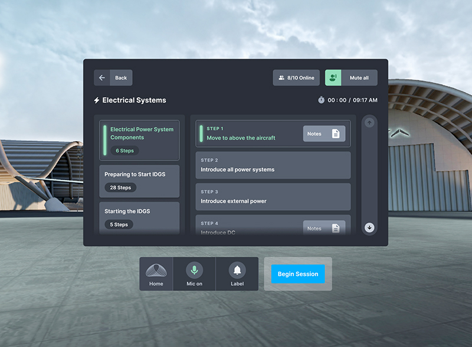

Aviation VR Training Application
This project focuses on designing a VR-based aviation training experience that allows students to learn cockpit operations in a fully immersive environment. By combining spatial interaction with intuitive interface design, the experience aims to simplify complex systems and enhance guided learning.
Responsibilities: Designed the in-VR training dashboard within a 3D cockpit environment Led the end-to-end UI/UX design process for the VR interface Defined interaction patterns for spatial user experience Created user flows and interface structures for guided learning scenarios Focused on usability, clarity, and immersion in a complex 3D environment
Figma Design File
Scope
This project focuses on designing an immersive VR training experience for aviation students to learn cockpit operations in a realistic 3D environment under instructor guidance. The goal was to enhance learning efficiency by combining spatial interaction with intuitive digital interfaces, allowing students to explore cockpit controls, understand system behaviors, and follow guided training scenarios within a virtual environment. A key component of the project was the design of an in-VR training panel (dashboard), enabling instructors to guide sessions and students to interact with structured learning content directly inside the cockpit.